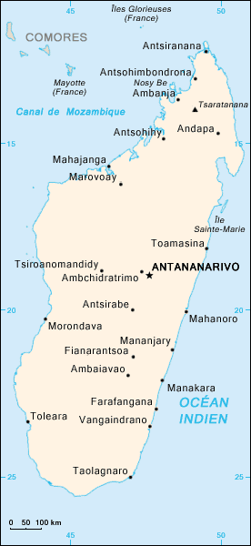

Relief de Madagascar
Sommaire

geographie:
histoire:
- Epoque coloniale:
- Independance vers 1960
- Vers la 3eme republique
economie:
Acceuil
Geographie
plus grande ville
Antananarivo
superficie total
587040 km2
fuseau horaire
UTC+3
Geographie
Située au sud de l’équateur, dans l’océan Indien, Madagascar est la cinquième île du monde en superficie (592 040 km22) après l'Australie, le Groenland, la Nouvelle-Guinée et Bornéo. Elle fait partie de l'Afrique, le canal du Mozambique, d'une largeur d'environ 400 km, la séparant de l'Afrique de l'Est continentale. La Grande Île, parfois appelée « l’île Rouge » en référence à la latérite qui colore ses plateaux, s’étire sur 1 580 km du nord au sud et 500 km d'est en ouest avec un maximum à 575 km. Elle est entourée de l'archipel des Comores (300 km au nord-ouest), des Seychelles (1 000 km au nord), de la La Réunion (800 km à l’est, mais aussi l'île Maurice un peu plus à l’est) et du Mozambique (400 km à l'ouest). Une chaîne montagneuse parsemée de massifs coupe la Grande Île dans le sens nord-sud à une altitude moyenne de 1000 à 1 500 mètres (les Hautes Terres représentent 70 % de la superficie du pays). La moitié ouest, la plus large et la plus étalée, est occupée par des plaines alluvionnaires à faible déclivité, depuis les hautes terres du centre jusqu’au canal du Mozambique, tandis qu’à l’est une étroite bande de falaises s’aplanit brusquement en une mince plaine côtière bordée par l’océan Indien. La région nord, volcanique, est isolée par le massif le plus élevé de l’île (où culmine le Tsaratanana de 2 876 m). Le « grand sud » semi-aride est partagé entre plateaux calcaires (sud-ouest), plaine sèche (pointe sud) et chaînes anosyennes (sud-est). L’Alaotra (182 km2) est le plus vaste des cinq grands lacs de Madagascar. L’originalité de Madagascar, qui a pour emblème l’arbre du voyageur (ravinala), réside dans son extrême diversité : la variété du relief et du climat a favorisé la biodiversité d’une flore et d’une faune caractérisées par un important taux d’endémisme.
Relief
Le relief divise le pays en trois bandes, une bande côtière étroite à l'est, des hauts plateaux au centre et une zone de plateaux plus bas et de plaines à l'ouest. Les hauts plateaux centraux ont une altitude oscillant entre 800 et 1 500 m et couvrent 60 % de l'île ; ils s'élèvent brusquement lorsqu'on approche le pays par la côte est et descendent beaucoup plus doucement vers les vastes plaines de l'ouest. Les hauts plateaux comptent trois principaux massifs : au nord, le Tsaratanana, qui possède le plus haut sommet de l'île (un pic volcanique de 2 876 m d'altitude), au centre l'Ankaratra et au sud l'Andringitra. La côte orientale est bordée de lagons abrités par une barrière de corail.